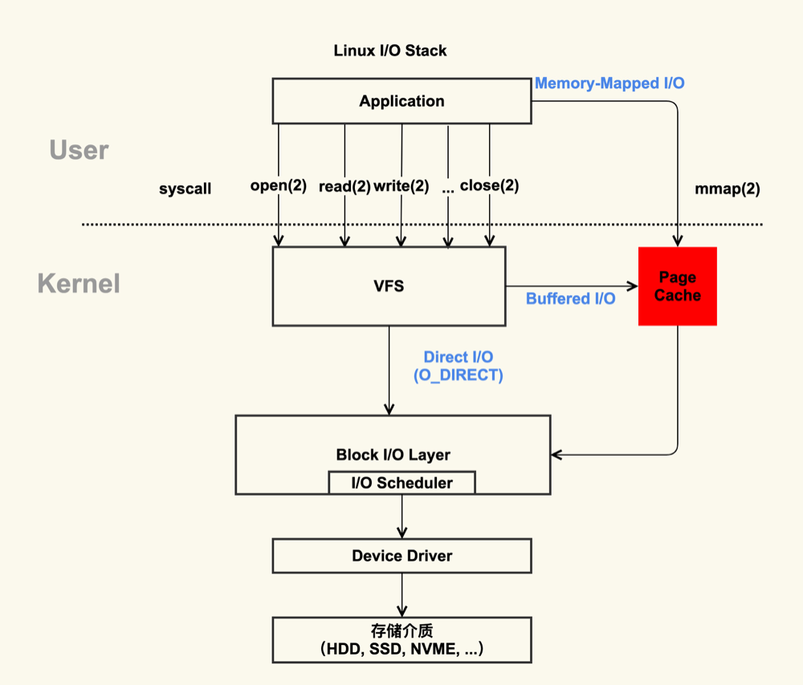
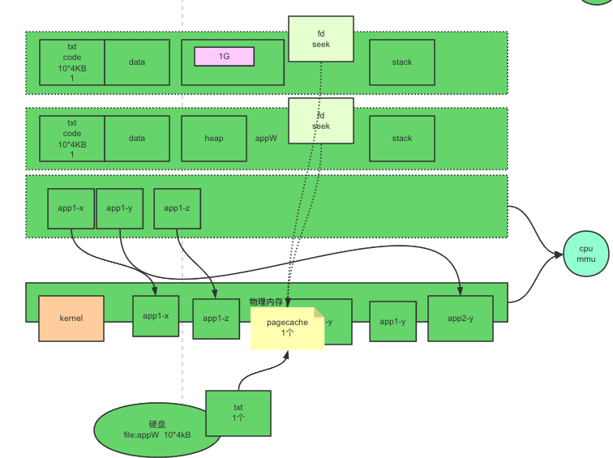
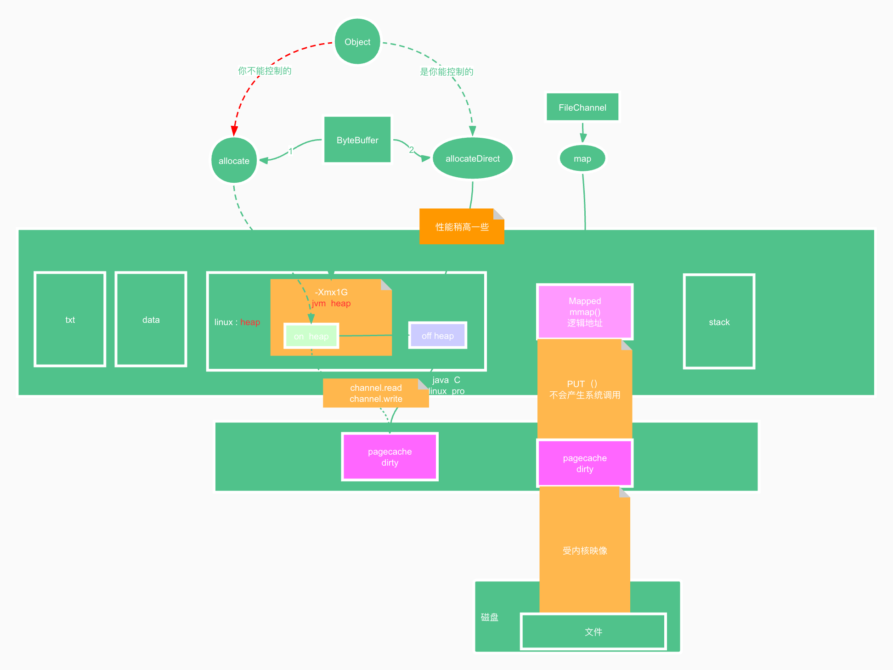

Linux文件系统

如上图，首先我们从图中得知两点:
- PageCache 是属于内核级别的，受到内核的管理
- 在用户态，用户可以使用mmap映射，直接访问PageCache，而不必进行内核态的切换。
PageCache
概念
首先我们要了解一点，现在的内存管理方案中多数是分页管理，也就是内存会划分为4k一页作为一个基本单位。而pagecache呢通常也是4KB，用来缓存文件。提高IO的速度。

如上图演示的流程中，两个应用程序想使用同一个文件，其文件描述符对应的是同一个PC页，在内核层面并不关心是谁使用的。
优点
1.加快数据访问
如果数据能够在内存中进行缓存，那么下一次访问就不需要通过磁盘 I/O 了，直接命中内存缓存即可。
由于内存访问比磁盘访问快很多，因此加快数据访问是 Page Cache 的一大优势。
2.减少 I/O 次数，提高系统磁盘 I/O 吞吐量
得益于 Page Cache 的缓存以及预读能力，而程序又往往符合局部性原理，因此通过一次 I/O 将多个 page 装入 Page Cache 能够减少磁盘 I/O 次数， 进而提高系统磁盘 I/O 吞吐量
缺点
page cache 也有其劣势，最直接的缺点是需要占用额外物理内存空间，物理内存在比较紧俏的时候可能会导致频繁的 swap 操作，最终导致系统的磁盘 I/O 负载的上升。
Page Cache 的另一个缺陷是对应用层并没有提供很好的管理 API，几乎是透明管理。应用层即使想优化 Page Cache 的使用策略也很难进行。因此一些应用选择在用户空间实现自己的 page 管理，而不使用 page cache，例如 MySQL InnoDB 存储引擎以 16KB 的页进行管理。
Page Cache 最后一个缺陷是在某些应用场景下比 Direct I/O 多一次磁盘读 I/O 以及磁盘写 I/O。
JAVA的IO访问

图中清晰的展示了 Java中访问文件使用的访问，要注意如下几点:
jvm的堆再java的堆里. 堆内：说的jvm的堆里的字节数组,堆外：多的是jvm堆外，也就是java进程的堆里的
mapped映射：是mmap调用的一个进程和内核共享的内存区域,且这个内存区域是pagecache/到文件的映射速度上比较是:on heap < off heap < mapped (file)
- 应用层面 netty :on heap , off heap. kafka log : mmap
总结
我们简单的梳理了下PageCache的概念以及它在linux文件系统中起到的重要作用，需要读者有计算机组成原理的知识铺垫。PageCache是文件IO的基础，IO很多的优化都是在它基础之上的

...
...
This is copyright.